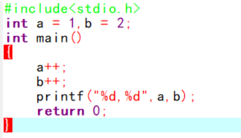
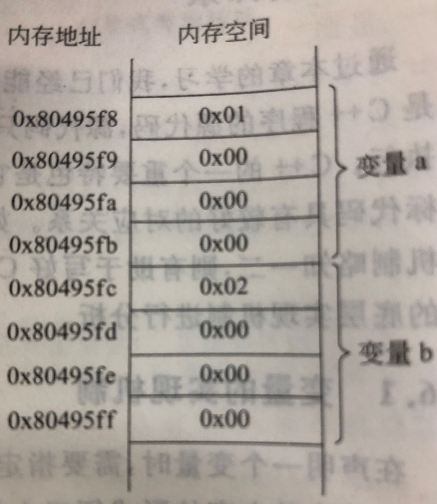

在声明一个变量时，需要指定它的数据类型和变量名，代码中我们都用文字表示便于人们阅读，但计算机的CPU确无法识别他们。在C++中的目标代码通过地址来区别不同的变量。

对于这段代码：将他们编译为可执行文件后，再反汇编，得到汇编语言代码。
源代码中的a++和b++两条语句对应下面的代码：
incl 0x80495f8 //把0x80495f8地址中的整数值加1
incl 0x80495fc //把0x80495fc地址中的整数值加1
注：
反汇编：是指将机器语言代码转换成与之对应的汇编语言代码的过程。
汇编语言代码:汇编语言代码是以指令为单位的，每条指令占一行，每条指令对应于一条CPU可以执行的指令。
每条指令都包括操作符和操作数，操作符表示这一条指令的操作类型， 上面两条指令的操作符都是inc1,用来执行+1的操作。操作数表示这一操作执行的对象，操作数可能是一个或多个，不同的操作符所需的操作数数量和用途个不相同。如：上面两条指令的操作数分别是0x80495f8 好0x80495fc，他们表示执行incl 的 +1 操作的内存地址。
所以，incl 0x80495f8所执行的操作就是将从0x80495f8内存地址开始的4个字节的内容加1。 0x80495f8和0x80495fc就是a和b 两个变量的首地址，二者之差为4，这是因为他们的内存都占了4个字节。如图：
